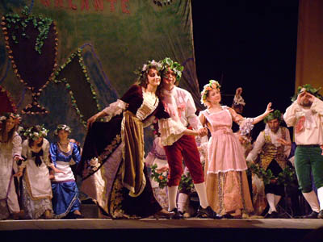
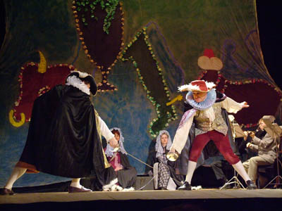
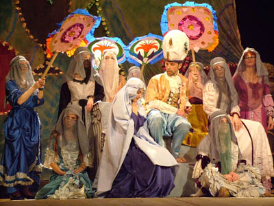

|  | Andre Campra (1660-1744) was a French composer of the Italian origin. He began his career in France as a composer of church music. So when he composed his first opera "L'Europe galante", he did not sign the score of the opera since being the author of a grate number of psalms and prayers he was afraid to lose his position as a chapel-master in the cathedral Notre-Dame de Paris. That is why the name of his brother Joseph, a cellist of the Royal Opera, appeared on the score. |
| Andre Campra became known in the history of French music as the author of 20 operas.
However, it was due to his first opera "L'Europe galante" that he became the founder of the new
genre in music: opera-ballet. This opera is rightly considered as a masterpiece of French music.
Some of the episodes of the opera (arias of Cephise and Zaide) might have been written with the
help of his friend and student A.-C. Destouches.
After the successful first night performance of "L'Europe galante", Campra was a music teacher
at Court and in 1723 he was appointed a rector or the Royal Opera. |
 |
|  | Synopsis of the opera Two goddess - Love and Enmity – Were always arguing with each other One claims: the evil rules the world, The other says: love wins discord. To settle the argument one day They started on a Europe cruise. For gods, you know, don't need visas To go anywhere they choose. In Italy, Spain Turkey, and France They watched love's triumphant dance. So they have settled the argument: Love always reigned wherever they went. |
Photos
Up